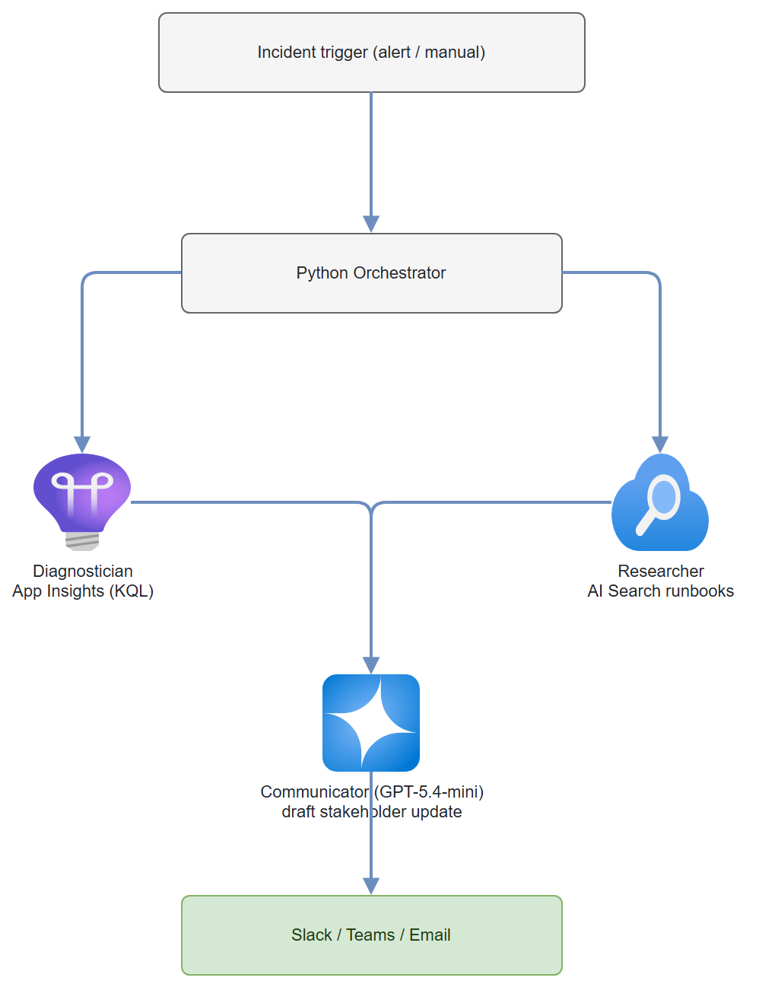

Build it yourself. This project is part of the AI Projects for Cloud Solution Architects portfolio. Full source, code, and the latest updates live in the csa-ai-projects repo on GitHub.
When an incident hits, you need three things fast: what broke, how to fix it, and what to tell stakeholders. This guide wires up three specialized agents that run concurrently and hand off to each other.
What You're Building
Three Foundry prompt agents working in concert: a Diagnostician that queries Application Insights via function calling, a Researcher that searches a runbook index in Azure AI Search, and a Communicator that drafts a stakeholder update. A Python orchestrator runs the Diagnostician and Researcher in parallel (fan-out), then feeds their outputs to the Communicator (fan-in). Total time to first stakeholder update: under 60 seconds.
Prerequisites
- A Microsoft Foundry / Azure AI Services resource with a
gpt-4.1deployment:bash az cognitiveservices account deployment create --name <res> --resource-group <rg> \ --deployment-name gpt-4.1 --model-name gpt-4.1 --model-version 2025-04-14 \ --model-format OpenAI --sku-name GlobalStandard --sku-capacity 10 - Azure Application Insights (or a Log Analytics workspace) you can query — you'll need its workspace (customer) ID.
- Azure AI Search service with an index of runbook documents (Step 0 below seeds one).
- Azure CLI logged in with Cognitive Services OpenAI Contributor on the AI Services resource, Search Index Data Reader on the search service, and Log Analytics Reader on the workspace. This demo uses Entra ID auth, not keys (enable AAD on Search with
az search service update --auth-options aadOrApiKey). AZURE_OPENAI_ENDPOINT,APP_INSIGHTS_WORKSPACE_ID, andSEARCH_ENDPOINTset in.env.- Python 3.11+
pip install "openai>=1.30.0" azure-identity azure-monitor-query \
azure-search-documents python-dotenv
Architecture

Step-by-Step Build
Step 0 — Seed a runbook index (skip if you already have one)
import os
from azure.identity import DefaultAzureCredential
from azure.search.documents.indexes import SearchIndexClient
from azure.search.documents.indexes.models import (
SearchIndex, SimpleField, SearchableField, SearchFieldDataType)
from azure.search.documents import SearchClient
endpoint = os.environ["SEARCH_ENDPOINT"]
index_name = os.environ.get("SEARCH_INDEX", "runbooks")
cred = DefaultAzureCredential()
SearchIndexClient(endpoint, cred).create_or_update_index(
SearchIndex(name=index_name, fields=[
SimpleField(name="id", type=SearchFieldDataType.String, key=True),
SearchableField(name="title", type=SearchFieldDataType.String),
SearchableField(name="content", type=SearchFieldDataType.String),
]))
SearchClient(endpoint, index_name, cred).upload_documents(documents=[
{"id": "rb-001",
"title": "Payment API elevated error rate (5xx) runbook",
"content": "Symptoms: payment-api returns HTTP 5xx and error rate exceeds 2%. "
"Remediation: check gateway dependency health; if the connection pool is "
"exhausted, restart the payment-api deployment; fail over to the secondary "
"gateway if errors persist >10 min; roll back the latest deployment if it "
"correlates. ETA 15-30 min. Escalation: Payments on-call (PagerDuty PAY-ONCALL)."},
{"id": "rb-002", "title": "Database connection pool exhaustion runbook",
"content": "Symptoms: timeouts and 'connection pool exhausted' exceptions. Remediation: "
"increase max pool size, kill long-running queries, scale out read replicas."},
])
print("Seeded runbook index:", index_name)
Step 1 — Set up the clients
All three agents run through one AzureOpenAI client (chat completions + function tools). App Insights and AI Search both authenticate with the same DefaultAzureCredential — no keys.
import os
import json
import time
from datetime import timedelta
from concurrent.futures import ThreadPoolExecutor
from dotenv import load_dotenv
from azure.identity import DefaultAzureCredential, get_bearer_token_provider
from openai import AzureOpenAI
from azure.monitor.query import LogsQueryClient, LogsQueryStatus
from azure.search.documents import SearchClient
load_dotenv()
ENDPOINT = os.environ["AZURE_OPENAI_ENDPOINT"]
APP_INSIGHTS_WORKSPACE_ID = os.environ["APP_INSIGHTS_WORKSPACE_ID"]
SEARCH_ENDPOINT = os.environ["SEARCH_ENDPOINT"]
SEARCH_INDEX = os.environ.get("SEARCH_INDEX", "runbooks")
MODEL = os.environ.get("INCIDENT_MODEL", "gpt-4.1")
credential = DefaultAzureCredential()
openai = AzureOpenAI(
azure_endpoint=ENDPOINT,
azure_ad_token_provider=get_bearer_token_provider(
credential, "https://cognitiveservices.azure.com/.default"),
api_version="2025-04-01-preview",
)
logs_client = LogsQueryClient(credential)
search_client = SearchClient(
endpoint=SEARCH_ENDPOINT, index_name=SEARCH_INDEX, credential=credential)
Step 2 — Define the tool functions
# --- Tool: query Application Insights ---
def query_app_insights(kql_query: str, time_range_hours: int = 1) -> str:
"""Execute a KQL query against Application Insights."""
from datetime import timedelta
try:
result = logs_client.query_workspace(
workspace_id=APP_INSIGHTS_WORKSPACE_ID,
query=kql_query,
timespan=timedelta(hours=time_range_hours)
)
if result.status == LogsQueryStatus.SUCCESS:
rows = []
for table in result.tables:
for row in table.rows:
rows.append(dict(zip(table.columns, row)))
return json.dumps(rows[:50], default=str) # cap at 50 rows; default=str for datetimes
else:
return json.dumps({"error": "Query failed", "details": str(result.partial_error)})
except Exception as e:
return json.dumps({"error": str(e)})
APP_INSIGHTS_TOOL = {"type": "function", "function": {
"name": "query_app_insights",
"description": (
"Query Application Insights using KQL to investigate errors, performance, "
"and availability. Returns up to 50 rows."
),
"parameters": {
"type": "object",
"properties": {
"kql_query": {
"type": "string",
"description": "Valid KQL query. Use requests, exceptions, traces, dependencies tables."
},
"time_range_hours": {
"type": "integer",
"description": "Time range in hours to query. Default 1.",
"default": 1
}
},
"required": ["kql_query"]
}
}}
# --- Tool: search runbooks ---
def search_runbooks(query: str, top: int = 5) -> str:
"""Search the runbook index in Azure AI Search."""
results = search_client.search(
search_text=query,
top=top,
include_total_count=True
)
docs = []
for r in results:
docs.append({
"title": r.get("title", "Unknown"),
"content": r.get("content", "")[:1000], # first 1000 chars
"score": r["@search.score"]
})
return json.dumps(docs)
SEARCH_RUNBOOK_TOOL = {"type": "function", "function": {
"name": "search_runbooks",
"description": "Search the runbook knowledge base for troubleshooting procedures.",
"parameters": {
"type": "object",
"properties": {
"query": {
"type": "string",
"description": "Natural language query describing the issue."
},
"top": {
"type": "integer",
"description": "Number of results to return (1-10). Default 5.",
"default": 5
}
},
"required": ["query"]
}
}}
Step 3 — Define the three agents
Each "agent" is just a system prompt plus the tools it may call. There's no agent to register — the chat API takes the instructions and tools on each call.
DIAGNOSTICIAN = (
"You are an SRE incident diagnostician. When given an incident description:\n"
"1. Query Application Insights to understand the scope and impact\n"
"2. Identify the error type, affected services, and blast radius\n"
"3. Determine the timeline (when did it start?)\n"
"4. Estimate affected user count if possible\n\n"
"Useful KQL queries:\n"
"- Error rate: requests | where success == false | summarize count() by bin(timestamp, 5m)\n"
"- Exceptions: exceptions | order by timestamp desc | take 20\n"
"- Affected dependencies: dependencies | where success == false | summarize count() by target\n\n"
"If telemetry is unavailable, say so and reason from the incident text. "
"Return a structured diagnostic report."
)
DIAGNOSTICIAN_TOOLS = [APP_INSIGHTS_TOOL]
RESEARCHER = (
"You are an incident response researcher. Given an incident description:\n"
"1. Search the runbook index for relevant procedures\n"
"2. Extract the specific remediation steps\n"
"3. Identify any prerequisites or dependencies for the fix\n"
"4. Note any known past incidents of the same type\n\n"
"Return: recommended runbook title, step-by-step remediation, "
"estimated resolution time, and escalation path."
)
RESEARCHER_TOOLS = [SEARCH_RUNBOOK_TOOL]
COMMUNICATOR = (
"You are an incident communications specialist. Given diagnostic findings "
"and runbook recommendations, draft a clear stakeholder update.\n\n"
"Format:\n"
"## Incident Update — [Severity] — [Short title]\n"
"**Status:** [Investigating / Identified / Mitigating / Resolved]\n"
"**Impact:** [What is affected and how many users]\n"
"**What we know:** [2-3 sentences of root cause]\n"
"**What we're doing:** [Numbered remediation steps in progress]\n"
"**ETA:** [Estimated resolution time]\n"
"**Next update:** [When to expect next communication]\n\n"
"Write at a business level — no jargon, no stack traces, no blame."
)
COMMUNICATOR_TOOLS = []
Step 4 — Agent runner with tool-call handling
TOOL_HANDLERS = {
"query_app_insights": query_app_insights,
"search_runbooks": search_runbooks,
}
def run_agent(instructions: str, tools: list, message: str) -> str:
"""Run one agent's tool-calling loop to completion; return its final text."""
messages = [
{"role": "system", "content": instructions},
{"role": "user", "content": message},
]
for _ in range(8): # safety cap on tool rounds
resp = openai.chat.completions.create(
model=MODEL,
messages=messages,
tools=tools or None,
tool_choice="auto" if tools else None,
)
msg = resp.choices[0].message
if not msg.tool_calls:
return msg.content or ""
messages.append(msg)
for call in msg.tool_calls:
handler = TOOL_HANDLERS.get(call.function.name)
args = json.loads(call.function.arguments or "{}")
result = handler(**args) if handler else json.dumps(
{"error": f"Unknown function: {call.function.name}"})
messages.append({"role": "tool", "tool_call_id": call.id, "content": result})
return msg.content or ""
Step 5 — Orchestrate with concurrent fan-out
from concurrent.futures import ThreadPoolExecutor
def respond_to_incident(incident_description: str) -> dict:
"""Fan-out to diagnostician and researcher, fan-in to communicator."""
print("Running diagnostician and researcher in parallel...")
with ThreadPoolExecutor(max_workers=2) as executor:
diag_future = executor.submit(
run_agent, DIAGNOSTICIAN, DIAGNOSTICIAN_TOOLS, incident_description)
research_future = executor.submit(
run_agent, RESEARCHER, RESEARCHER_TOOLS, incident_description)
diagnostic_report = diag_future.result()
runbook_recommendation = research_future.result()
print("Drafting stakeholder update...")
communicator_input = (
f"Incident description:\n{incident_description}\n\n"
f"Diagnostic findings:\n{diagnostic_report}\n\n"
f"Runbook recommendations:\n{runbook_recommendation}"
)
stakeholder_update = run_agent(COMMUNICATOR, COMMUNICATOR_TOOLS, communicator_input)
return {
"diagnostic_report": diagnostic_report,
"runbook_recommendation": runbook_recommendation,
"stakeholder_update": stakeholder_update,
}
Step 6 — Main
def main():
# Sample incident
incident = """
INCIDENT P1 — 2026-06-25 14:32 UTC
Service: payment-api (production)
Alert: Error rate exceeded 15% (threshold: 2%)
Symptom: Customers reporting "Payment failed" errors on checkout
First seen: ~14:25 UTC
Region: East US 2
"""
print("Responding to incident...")
results = respond_to_incident(incident)
print("\n" + "="*60)
print("STAKEHOLDER UPDATE:")
print("="*60)
print(results["stakeholder_update"])
if __name__ == "__main__":
main()
Test It
python incident_responder.py
Time the execution:
time python incident_responder.py
With parallel fan-out, diagnostician + researcher run simultaneously. Expect total time ~30-45 seconds vs ~60-80 seconds sequential.
Verify:
- Diagnostician issued at least one query_app_insights tool call (add a print inside the tool to watch it fire)
- Researcher found and cited relevant runbooks
- Communicator output has no technical jargon
Common Mistakes
- Reaching for the old Assistants
agentsAPI.azure-ai-projects2.x removed the threads/runs Assistants surface —AIProjectClienthas no.agents, andFunctionTool/PromptAgentDefinition/MessageRole/SubmitToolOutputsActionaren't importable. Drive each agent withopenai.chat.completions.create(..., tools=[...])and a tool-call loop, as shown above. - Thread pool size too small. With 3+ agents, use
max_workersequal to the number of parallel agents. - Tool function returns unserializable objects. All tool returns must be strings (JSON-encoded) —
query_app_insightsusesjson.dumps(..., default=str)because KQL rows can contain datetimes. - AI Search rejects your token. Data-plane AAD must be enabled on the service (
az search service update --auth-options aadOrApiKey) and your identity needs Search Index Data Reader; otherwise you'll get 403s.
Extend It
- PagerDuty integration: After the communicator draft is approved, use a FunctionTool to POST the update to a PagerDuty incident timeline via their API.
- Incident post-mortem generation: After resolution, pass the full diagnostic + remediation timeline to a fourth agent that drafts a 5 Whys post-mortem document.
- Severity auto-triage: Add a fourth agent before the fan-out that reads the alert payload and assigns severity (P1/P2/P3), then skip the researcher for P3s to save cost.